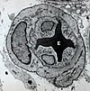

vasoconstriction

Definition: Vasoconstriction is the narrowing of the blood vessels resulting from contraction of the muscular wall of the vessels, in particular the large arteries and small arterioles. The process is the opposite of vasodilation, the widening of blood vessels. The process is particularly important in controlling hemorrhage and reducing acute blood loss. When blood vessels constrict, the flow of blood is restricted or decreased, thus retaining body heat or increasing vascular resistance. This makes the skin turn paler because less blood reaches the surface, reducing the radiation of heat. On a larger level, vasoconstriction is one mechanism by which the body regulates and maintains mean arterial pressure.
Source: Wikipedia
Wikipedia Page (Something wrong with this association? Let us know.)
Wikidata Page (Something wrong with this association? Let us know.)